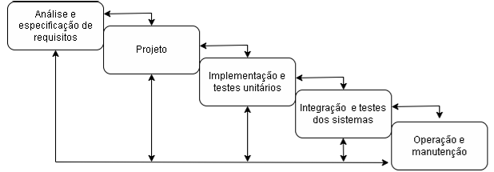

APS
APS
APS: Análise e projeto de sistemas
A análise e projeto de sistemas é uma etapa em que se ocorre o planejamento e desenvolvimento do programa, através da análise de demandas e requisitos estabelecidos pelo cliente ou usuário, otimizando o processo e reduzindo as possíveis falhas do projeto. Simplificando, é na matéria de APS onde será ensinado sobre como fazer a organização de um projeto de programação, assim ajudando na hora de sua execução. Essa matéria é importante pois ela pode ser usada em outras disciplinas para projetos futuros. Dentro de APS, existem diversos tópicos a serem estudados, mas para início, focaremos em alguns principais, que são:
- Ciclo de vida do software;
- Levantamento de requisitos;
- Requisitos funcionais e não funcionais;
- Metodologias ágeis.
Agora, será explicado um pouco sobre cada um dos temas apresentados.
Ciclo de vida do software
O ciclo de vida é base para que se possa ser feita a programação de um software, onde estarão os processos e atividades que a serem feitos dentro do desenvolvimento de sistemas. São como o passo a passo para que o projeto seja bem executado do início ao fim. Sem o ciclo de vida escolhido desde o começo do processo, pode ser bem mais difícil fazer com que o projeto flua e avance, principalmente se for um programa complexo.
No curso de Desenvolvimento de Sistemas, trabalhamos com dois principais ciclos de vida, ou também chamados e paradigmas da programação. São eles: O ciclo de vida clássico/ paradigma clássico; e o paradigma evolutivo/ prototipação.
Ciclo de vida clássico
- Construção de um software de forma linear, sequencial, estruturada;
- O resultado de uma fase se constitui na entrada de outra;
- Também é conhecido por sistema cascata;
- Fases estruturadas como um conjunto de atividades que podem ser executadas por pessoas diferentes de forma simultânea;
- Método mais antigo utilizado na engenharia de software;
- Quanto maior o projeto for, mais complexo se torna usar esse tipo de paradigma;
- Não é mais tão utilizado atualmente;
- Possui 5 etapas:
- Análise e especificação de requisitos;
- Projeto;
- Implementação e teste unitários;
- Integração e teste do sistema;
- Operação e manutenção.
Para exemplificar melhor esse ciclo de vida, podemos ver esta imagem representativa, no qual as etapas são feitas em ordem, e em caso de necessidade de mudança, é necessário retornar à primeira parte do ciclo.

Paradigma evolutivo
- Baseado no desenvolvimento e implementação de um produto inicial, que é submetido aos comentários e críticas do usuário, assim sendo refinado;
- É mais dinâmico, transitando entre etapas e possuindo interação com o cliente;
- O “projeto rápido” possibilita aos desenvolvedores ilustrar ao usuário um esqueletos das entradas e formatação das saídas;
- O Usuário avalia o resultado e sugere redefinições dos requisitos;
- Desenvolvimento exploratório: Objetivo de trabalhar junto ao usuário para descobrir os requisitos. São geradas diversas variáveis do produto, adicionando e retirando coisas caso necessário, até chegar a sua versão final. É usado quando é difícil especificar todos os requisitos necessários logo de início.
- Protótipo descartável: O protótipo se concentra em fazer testes e experimentos com requisitos que ainda não estão bem estabelecidos, para que se obtenha uma melhor definição deles.
Levantamento de requisitos
A análise de requisitos é uma parte muito importante para o desenvolvimento de um software, sendo onde será observado as necessidades e expectativas do cliente sobre o projeto. Requisitos são a base para qualquer bom projeto, por isso é essencial se atentar às especificações descritas.
Existem dois tipos de requisitos: os requisitos funcionais e os requisitos não funcionais.
Requisitos funcionais
Os requisitos funcionais descrevem a parte principal do projeto, que interfere diretamente no desenvolvimento do software. Os requisitos funcionais são variados e mudam de acordo com a necessidade do cliente, se baseando no propósito principal do programa.
Veja este exemplo:
Um cliente quer fazer um programa para facilitar a organização de seu mercado. Nesse sistema, o cliente precisa conter dados referentes aos seus funcionários, fornecedores, produtos e clientes do mercado.
Observação: CRUD representa quatro operações básicas utilizadas em banco de dados relacionais, que significam: Create - Criar; Retrieve - Consultar; Update - Atualizar; Delete - Deletar;
Alguns dos requisitos que esse projeto do mercado poderia ter são:
- RF1- Cadastro de clientes:
- CRUD clientes
- RF2- Cadastro de funcionários:
- CRUD funcionários
- RF3- Cadastro de fornecedores:
- CRUD fornecedores
- RF4- Cadastro de Produtos
- CRUD produtos
Estes são exemplos bem simples para requisitos funcionais, apenas para serem exemplificados. Ao decorrer do curso de DS, você poderá se aprofundar mais nesse assunto.
Requisitos não funcionais
Esses requisitos não são necessários para a funcionalidade principal do sistema, mas não deixam de ser importantes para o melhor desempenho do programa.
Usando o mesmo exemplo anterior do mercado, podemos dizer que alguns requisitos não funcionais presentes nesse projeto poderiam ser:
- Programação em Java:
- O sistema deve ser programado exclusivamente em Java
- Mensagens de erro claras:
- As mensagens de erro devem estar objetivas para a compreensão do usuário
- Manter histórico de operações:
- Registar as operações feitas no sistema em um arquivo armazenado
Metodologias Ágeis
As metodologias ágeis na programação são maneiras de fazer o desenvolvimento de software de forma mais flexível, com colaboração e entrega contínua para o cliente. Ao invés de seguir planos rígidos no projeto, as metodologias ágeis se destacam na adaptação com mudanças e interação constante. Assim, o trabalho é dividido em partes menores com um determinado tempo de duração. Dessa forma a equipe trabalha com uma parte específica do projeto, podendo dar sempre o feedback ao cliente. Existem diversos tipos de metodologias ágeis, como por exemplo a Crystal, Scrum, Kanban, entre outras. O estudo sobre as metodologias ágeis será mais aprofundado ao decorrer do curso.
Veja livros sobre esse tópico
Descubra uma variedade de eBooks que podem ajudar a expandir seu aprendizado.